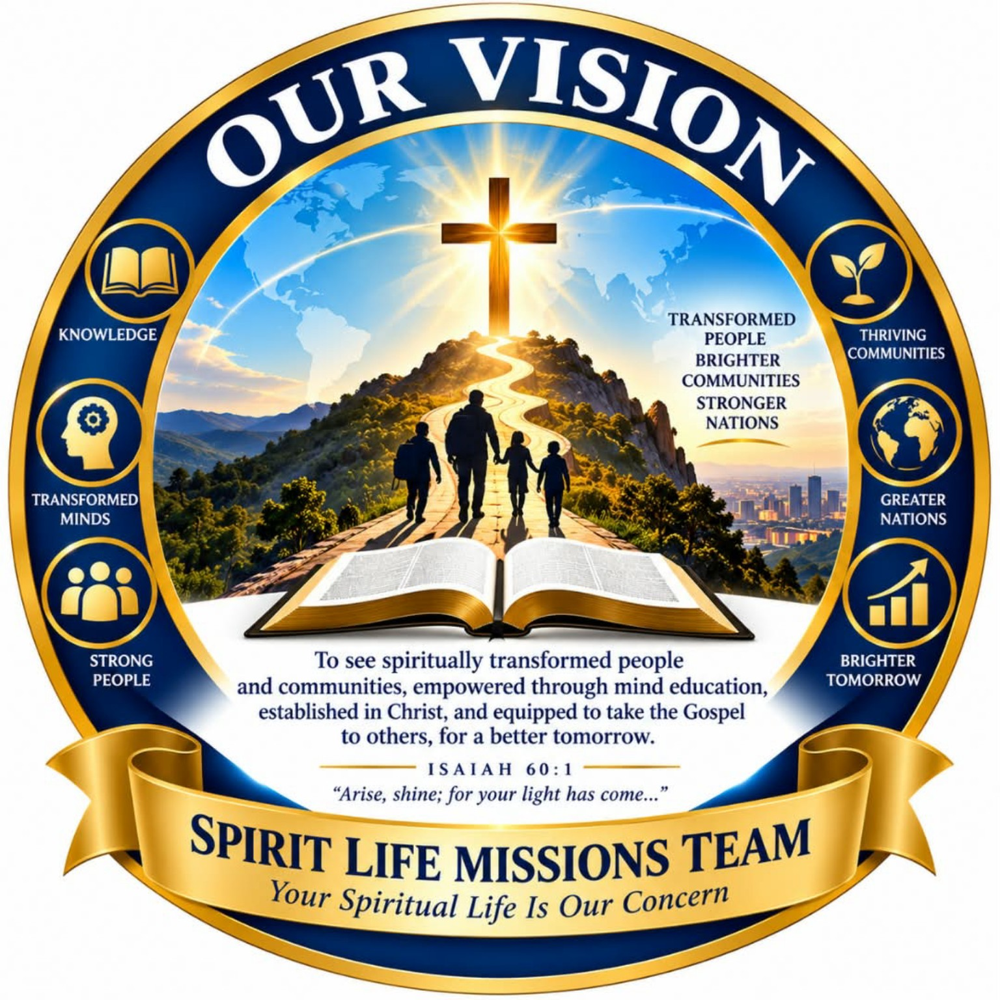

01
Pray
Seek God for people, places, open doors, wisdom and provision.
From Gospel proclamation to follow-up and discipleship, the mission is designed as a journey rather than a single event.
Seek God for people, places, open doors, wisdom and provision.
Prepare people, teaching, transport, literature, equipment and practical plans.
Enter communities with humility, respect, compassion and a clear Gospel purpose.
Share the message of Jesus Christ through preaching, teaching and personal witness.
Meet practical needs and demonstrate Christ-like care in the community.
Help new and growing believers build a life of Scripture, prayer and obedience.
Mission support can help with evangelistic travel, Gospel campaigns, Christian literature, transport, equipment and community outreach.
Support MissionsSpirit Life Missions Team combines Gospel ministry with practical personal development, believing that transformed lives can strengthen families and communities.

Spirit Life Missions Team Prison Outreach is committed to bringing the Gospel of Jesus Christ, hope, restoration and Mind Education to people in correctional institutions. We believe imprisonment does not have to define a person's future and that genuine transformation begins with spiritual renewal and a change of mind.
Through Bible teaching, prayer, counselling, discipleship and Mind Education, participants are encouraged to develop positive thinking, strong character, self-control, responsible decision-making, communication skills and a renewed sense of purpose. Practical life skills and preparation for reintegration into families and communities are also part of the vision.
Mind Education is a key part of Spirit Life Missions Team that focuses on transforming people by developing the way they think, make decisions, solve problems and respond to life's challenges.
It recognises that improving people's lives requires more than meeting spiritual and physical needs. People also need knowledge, positive thinking, character, discipline, confidence, practical skills and responsible decision-making.
By combining spiritual growth with personal development and practical education, the ministry seeks to raise empowered individuals who can build stronger families, communities and a better tomorrow.
Our vision is to see people established in Christ, empowered through Mind Education and equipped to take the Gospel to others. The goal is a ministry model where spiritual formation, education, practical skills and community transformation work together.
As the ministry records verified testimonies, this page can become a living archive of places visited, people reached, decisions for Christ, baptisms, discipleship groups and community projects.
For each outreach, publish the date, location, purpose, team, testimony, photos, prayer needs and follow-up plan.
View Media